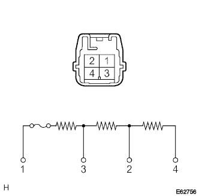

ブロワ レジスタ（エアコンディショニングマニアル） 単体点検
印刷
準備品一覧
1. ブロワ レジスタ点検
SST
09082-00030
09083-00150

SST(トヨタエレクトリカルテスター)を使用して、コネクター端子間の抵抗値を点検する。
基準値
1端子←→3端子間···0.39±0.03Ω
1端子←→2端子間···1.49±0.1Ω
1端子←→4端子間···2.79±0.2Ω
□ 参 考 □
1端子←→2、3、4端子間に温度ヒューズあり